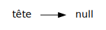
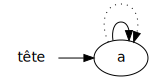
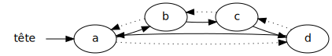

Liste chaînée double
Liste chaînée double
- Dans une liste chaînée double, chaque élément pointe:
- vers l’élément suivant:
→ - vers l’élément précédent:
⇢
- vers l’élément suivant:
-
On peut donc accéder à la fin de la liste en reculant de 1 à partir de la tête
- ci-haut, si on recule de 1 à partir de
a, on arrive àf
- ci-haut, si on recule de 1 à partir de
-
Inconvénients:
- plus difficile à implanter qu’une liste chaînée simple
- il faut quand même faire une boucle pour obtenir un élément de la liste
-
Avantages:
- on peut chercher un élément vers l’avant ou vers l’arrière
- l’insertion/retrait au début et à la fin est efficace
- on ne consome pas d’espace mémoire en trop
Exemple: ajouts dans liste chaînée double
liste
|
 |
liste.add('a')
|
 |
liste.add('b')
|

|
liste.add('c')
|

|
liste.add('d')
|
 |
Liste chaînée double en Java
- Notre classe pour l’élément contient cette fois-ci:
- la valeur
- un pointeur vers l’élément suivant
- un pointeur vers l’élément précédent
public class ElementChaineDouble<E> {
private E valeur;
private ElementChaineDouble<E> suivant = this;
private ElementChaineDouble<E> precedent = this;
// [...]
}
- La classe pour la liste est similaire:
public class ListeJavaChaineeDouble<E extends Object> extends ListeJava<E> {
private int taille = 0;
private ElementChaineDouble<E> tete = null;
// [...]
}
-
Pour modifier un élément, on fait une boucle:
- soit en cherchant vers l’avant
- (lorsque la position est proche du début)
- soit en cherchant vers l’arrière
- (lorsque la position est proche de la fin)
- soit en cherchant vers l’avant
-
Pour insérer, on peut soit:
- insérer après un élément
- insérer avant un élément
-
P.ex. insérer à la fin de la liste équivaut à:
- insérer avant la tête!
Efficacité simple Vs double
- Pour ajouter à la fin:

- Pour retirer à la fin:
- Pour insérer au début:
- Pour retirer au début:
- Pour modifier au milieu: